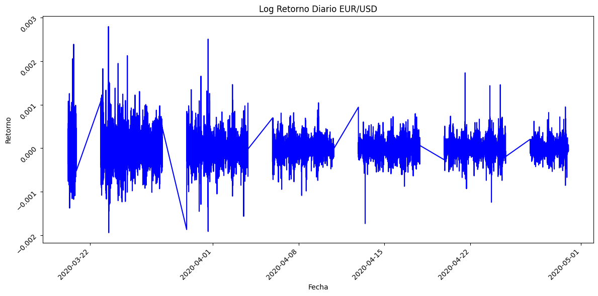
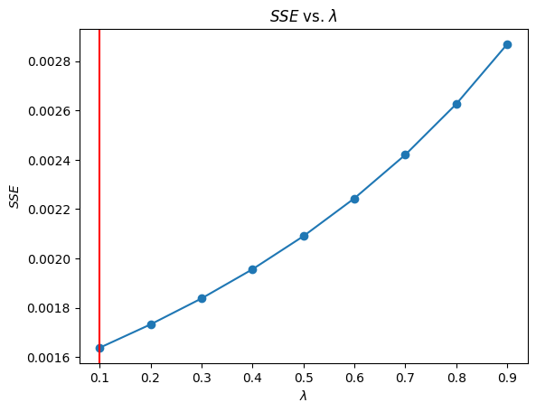
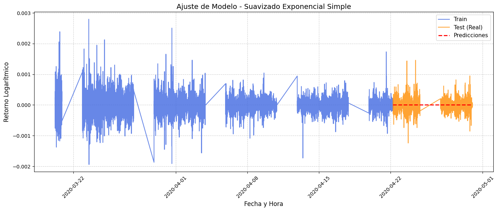
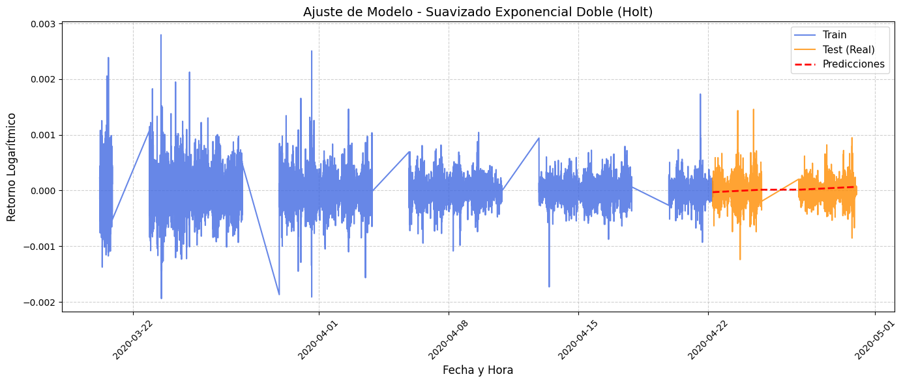
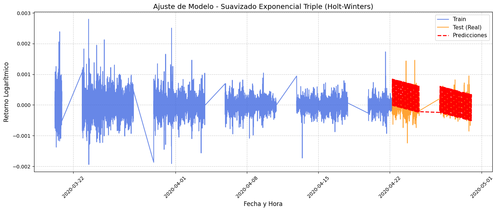

Suavización exponencial#
import torch
# Verificar si hay una GPU (CUDA) disponible y asignarla
if torch.cuda.is_available():
device = torch.device("cuda")
print(f"¡Excelente! GPU activada y lista para usarse.")
print(f"Dispositivo detectado: {torch.cuda.get_device_name(0)}")
else:
device = torch.device("cpu")
print("No se detectó GPU. Se utilizará la CPU. Asegúrate de haberla activado en el menú 'Entorno de ejecución'.")
---------------------------------------------------------------------------
ModuleNotFoundError Traceback (most recent call last)
Cell In[1], line 1
----> 1 import torch
3 # Verificar si hay una GPU (CUDA) disponible y asignarla
4 if torch.cuda.is_available():
ModuleNotFoundError: No module named 'torch'
import torch.nn as nn
# 1. Mover DATOS (Tensores) a la GPU
# Creamos un tensor de ejemplo (por defecto se crea en la CPU)
tensor_cpu = torch.randn(10, 10)
print(f"El tensor original está en: {tensor_cpu.device}")
# Lo movemos a la GPU usando la variable 'device' que creamos antes
tensor_gpu = tensor_cpu.to(device)
print(f"Ahora el tensor está en: {tensor_gpu.device}")
# 2. Mover MODELOS a la GPU
# Creamos una red neuronal simple (por defecto está en la CPU)
modelo_simple = nn.Linear(10, 2)
# Movemos todos los parámetros del modelo a la GPU
modelo_simple = modelo_simple.to(device)
# Verificamos dónde están los pesos del modelo
print(f"Los parámetros del modelo están en: {next(modelo_simple.parameters()).device}")
# ¡Ahora puedes entrenar tu modelo usando la GPU!
El tensor original está en: cpu
Ahora el tensor está en: cuda:0
Los parámetros del modelo están en: cuda:0
import kagglehub
import os
# Descargamos la última versión del dataset
path = kagglehub.dataset_download("imetomi/eur-usd-forex-pair-historical-data-2002-2019")
print("Ruta a los archivos del dataset:", path)
Using Colab cache for faster access to the 'eur-usd-forex-pair-historical-data-2002-2019' dataset.
Ruta a los archivos del dataset: /kaggle/input/eur-usd-forex-pair-historical-data-2002-2019
import pandas as pd
import numpy as np
import seaborn as sns
from matplotlib import pyplot as plt
import os
for file in os.listdir(path):
print(file)
df = pd.read_csv(os.path.join(path, "eurusd_minute.csv"))
# Combinar Date y Time para la el horario exacto
df_time = df.copy()
if 'Date' in df_time.columns and 'Time' in df_time.columns:
df_time['Datetime'] = pd.to_datetime(df_time['Date'] + ' ' + df_time['Time'])
df_time = df_time.set_index('Datetime')
df_time = df_time.drop(columns=['Date', 'Time'])
df_time = df_time.sort_index()
# Tomar solo los ultimos 10,000 datos
df_time = df_time.tail(40320)
print(df_time.head())
print(df_time.shape)
eurusd_hour.csv
eurusd_minute.csv
eurusd_news.csv
BO BH BL BC BCh AO \
Datetime
2020-03-20 04:40:00 1.07418 1.07447 1.07402 1.07441 -0.00023 1.07439
2020-03-20 04:41:00 1.07440 1.07480 1.07424 1.07470 -0.00030 1.07464
2020-03-20 04:42:00 1.07472 1.07519 1.07472 1.07495 -0.00023 1.07498
2020-03-20 04:43:00 1.07497 1.07520 1.07491 1.07520 -0.00023 1.07524
2020-03-20 04:44:00 1.07522 1.07546 1.07503 1.07538 -0.00016 1.07547
AH AL AC ACh
Datetime
2020-03-20 04:40:00 1.07471 1.07428 1.07468 -0.00029
2020-03-20 04:41:00 1.07505 1.07450 1.07495 -0.00031
2020-03-20 04:42:00 1.07543 1.07498 1.07521 -0.00023
2020-03-20 04:43:00 1.07545 1.07517 1.07545 -0.00021
2020-03-20 04:44:00 1.07572 1.07528 1.07562 -0.00015
(40320, 10)
import numpy as np
# Calculamos los retornos logarítmicos
df_time['Retorno'] = np.log(df_time['BC'] / df_time['BC'].shift(1))
df_time=df_time.dropna()
fig, ax = plt.subplots(figsize=(12, 6))
df_time['Retorno'].plot(ax=ax, color='b', title='Log Retorno Diario EUR/USD')
ax.set_xlabel('Fecha')
ax.set_ylabel('Retorno')
ax.tick_params(axis='x', rotation=45)
ax.tick_params(axis='y', rotation=45)
plt.tight_layout()
plt.show()

import warnings
warnings.filterwarnings('ignore')
import numpy as np
import matplotlib.pyplot as plt
import pandas as pd
from statsmodels.tsa.holtwinters import SimpleExpSmoothing
from statsmodels.tools.sm_exceptions import ValueWarning
# Ignorar explícitamente el ValueWarning de statsmodels
warnings.simplefilter('ignore', ValueWarning)
# Usamos la serie de retornos que ya tienes
serie = df_time['Retorno']
lambda_vec = np.arange(0.1, 1.0, 0.1)
def sse_speed(alpha):
# Ajustamos el modelo con el nivel de suavizado especificado
modelo = SimpleExpSmoothing(serie, initialization_method="estimated").fit(smoothing_level=alpha, optimized=False)
# Retornamos la suma de errores al cuadrado (SSE)
return modelo.sse
sse_vec = pd.Series(dtype=float)
for lambda_ in lambda_vec:
sse_vec.loc[len(sse_vec)] = sse_speed(lambda_)
# Encontramos el lambda óptimo
opt_lambda = lambda_vec[sse_vec.argmin()]
print(f"Lambda (alpha) óptimo: {opt_lambda:.1f}")
Lambda (alpha) óptimo: 0.1
plt.plot(lambda_vec, sse_vec, marker='o', linestyle='-')
plt.title("$SSE$ vs. $\lambda$")
plt.xlabel('$\lambda$')
plt.ylabel('$SSE$')
plt.axvline(x=lambda_vec[sse_vec.idxmin()], color='red')
plt.show()

La serie da más peso a los datos reciente
import pandas as pd
import numpy as np
from matplotlib import pyplot as plt
import seaborn as sns
import statsmodels.api as sm
from sklearn.metrics import mean_absolute_error
import itertools
import warnings
from statsmodels.tools.sm_exceptions import ConvergenceWarning
warnings.simplefilter('ignore', ConvergenceWarning)
from statsmodels.tsa.holtwinters import ExponentialSmoothing
from statsmodels.tsa.holtwinters import SimpleExpSmoothing
from statsmodels.tsa.seasonal import seasonal_decompose
import statsmodels.tsa.api as smt
print(len(serie))
tau_test = int(len(serie) * 0.20)
train = serie[:-tau_test]
test = serie[-tau_test:]
print((len(train), len(test)))
40318
(32255, 8063)
def plot_model(train, test, y_pred, title):
"""
Grafica los datos de entrenamiento, prueba y las predicciones.
Asume que test y y_pred comparten el mismo índice temporal.
"""
plt.figure(figsize=(14, 6))
# Graficamos la serie de entrenamiento
plt.plot(train.index, train, label='Train', color='royalblue', alpha=0.8)
# Graficamos la serie de prueba (valores reales)
plt.plot(test.index, test, label='Test (Real)', color='darkorange', alpha=0.8)
# Graficamos las predicciones
plt.plot(test.index, y_pred, label='Predicciones', color='red', linestyle='--', linewidth=2)
# Configuraciones estéticas
plt.title(title, fontsize=14)
plt.xlabel('Fecha y Hora', fontsize=12)
plt.ylabel('Retorno Logarítmico', fontsize=12)
plt.legend(loc='best', fontsize=11)
plt.grid(True, linestyle='--', alpha=0.6)
plt.xticks(rotation=45)
plt.tight_layout()
plt.show()
def ses_optimizer(train, alphas, step):
best_alpha, best_mae = None, float("inf")
for alpha in alphas:
ses_model = SimpleExpSmoothing(train).fit(smoothing_level=alpha, optimized=False)
y_pred = ses_model.forecast(step)
mae = mean_absolute_error(test, y_pred)
if mae < best_mae:
best_alpha, best_mae = alpha, mae
return best_alpha, best_mae
def ses_model_tuning(train , test, step, title="Model Tuning - Single Exponential Smoothing"):
# Ampliamos el rango de búsqueda para abarcar todos los valores posibles (0.01 a 0.2)
alphas = np.arange(0.01, 1.0, 0.01)
best_alpha, best_mae = ses_optimizer(train, alphas, step=step)
final_model = SimpleExpSmoothing(train).fit(smoothing_level=best_alpha, optimized=False)
y_pred = final_model.forecast(step)
mae = mean_absolute_error(test, y_pred)
plot_model(train, test, y_pred, title)
# Llamamos a la función de ajuste y graficado
step = len(test)
ses_model_tuning(train, test, step, title="Ajuste de Modelo - Suavizado Exponencial Simple")

Párrafo breve:
Al modelar retornos logarítmicos, es normal observar una serie que fluctúa alrededor de cero sin tendencia aparente, ya que los retornos suelen comportarse como un proceso cercano al ruido aleatorio. Esto implica que su valor esperado es aproximadamente constante y difícil de predecir, lo que es consistente con la eficiencia de los mercados. Por ello, modelos simples como el suavizado exponencial tienden a producir predicciones cercanas a cero, reflejando que la dinámica principal no está en la media sino en la variabilidad de los retornos.
from sklearn.metrics import mean_absolute_error, mean_squared_error
import numpy as np
# Volvemos a generar la predicción para poder evaluarla
# Usamos opt_lambda (0.1) que determinamos anteriormente
final_model = SimpleExpSmoothing(train).fit(smoothing_level=opt_lambda, optimized=False)
y_pred = final_model.forecast(len(test))
# 1. Métricas de Error
mae = mean_absolute_error(test, y_pred)
mse = mean_squared_error(test, y_pred)
rmse = np.sqrt(mse)
# 2. Directional Accuracy (Precisión Direccional)
# Como la serie ya son retornos, comparamos el signo real vs el signo predicho
sign_real = np.sign(test.values)
sign_pred = np.sign(y_pred.values)
# Calculamos el porcentaje de veces que acertó la dirección
da = np.mean(sign_real == sign_pred) * 100
# Imprimimos los resultados
print("--- MÉTRICAS DE EVALUACIÓN ---")
print(f"MAE (Mean Absolute Error): {mae:.6f}")
print(f"MSE (Mean Squared Error): {mse:.8f}")
print(f"RMSE (Root Mean Squared): {rmse:.6f}")
print(f"Directional Accuracy (DA): {da:.2f}%")
--- MÉTRICAS DE EVALUACIÓN ---
MAE (Mean Absolute Error): 0.000096
MSE (Mean Squared Error): 0.00000002
RMSE (Root Mean Squared): 0.000140
Directional Accuracy (DA): 46.79%
def des_optimizer(train, test, alphas, betas, step):
best_alpha, best_beta, best_mae = None, None, float("inf")
for alpha in alphas:
for beta in betas:
try:
# Usamos trend='add' porque los retornos fluctúan alrededor de cero y pueden ser negativos
des_model = ExponentialSmoothing(train, trend="add").fit(smoothing_level=alpha, smoothing_trend=beta, optimized=False)
y_pred = des_model.forecast(step)
mae = mean_absolute_error(test, y_pred)
if mae < best_mae:
best_alpha, best_beta, best_mae = alpha, beta, mae
except:
continue
return best_alpha, best_beta, best_mae
def des_model_tuning(train, test, step, title="Ajuste de Modelo - Suavizado Exponencial Doble (Holt)"):
# Definimos el espacio de búsqueda para alpha y beta
alphas = np.arange(0.01, 1.0, 0.1)
betas = np.arange(0.01, 1.0, 0.1)
# Encontramos los mejores parámetros
best_alpha, best_beta, best_mae = des_optimizer(train, test, alphas, betas, step)
print(f"Mejores hiperparámetros encontrados - Alpha: {best_alpha:.2f}, Beta: {best_beta:.2f}")
# Ajustamos el modelo final con los mejores parámetros
final_model = ExponentialSmoothing(train, trend="add").fit(smoothing_level=best_alpha, smoothing_trend=best_beta, optimized=False)
y_pred = final_model.forecast(step)
# Graficamos usando la función que ya teníamos
plot_model(train, test, y_pred, title)
return final_model, y_pred
# Ejecutamos la búsqueda, ajuste y gráfica
step = len(test)
des_model, y_pred_des = des_model_tuning(train, test, step)
Mejores hiperparámetros encontrados - Alpha: 0.61, Beta: 0.31

# 1. Métricas de Error para Suavizado Exponencial Doble
mae_des = mean_absolute_error(test, y_pred_des)
mse_des = mean_squared_error(test, y_pred_des)
rmse_des = np.sqrt(mse_des)
# 2. Directional Accuracy (Precisión Direccional)
sign_real = np.sign(test.values)
sign_pred_des = np.sign(y_pred_des.values)
da_des = np.mean(sign_real == sign_pred_des) * 100
# Imprimimos los resultados
print("--- MÉTRICAS DE EVALUACIÓN (DOBLE SUAVIZADO EXPONENCIAL) ---")
print(f"MAE (Mean Absolute Error): {mae_des:.6f}")
print(f"MSE (Mean Squared Error): {mse_des:.8f}")
print(f"RMSE (Root Mean Squared): {rmse_des:.6f}")
print(f"Directional Accuracy (DA): {da_des:.2f}%")
--- MÉTRICAS DE EVALUACIÓN (DOBLE SUAVIZADO EXPONENCIAL) ---
MAE (Mean Absolute Error): 0.000101
MSE (Mean Squared Error): 0.00000002
RMSE (Root Mean Squared): 0.000144
Directional Accuracy (DA): 48.16%
def tes_optimizer(train, test, alphas, betas, gammas, step, seasonal_periods=60):
best_alpha, best_beta, best_gamma, best_mae = None, None, None, float("inf")
for alpha in alphas:
for beta in betas:
for gamma in gammas:
try:
# trend='add' y seasonal='add'
tes_model = ExponentialSmoothing(
train, trend="add", seasonal="add", seasonal_periods=seasonal_periods
).fit(smoothing_level=alpha, smoothing_trend=beta, smoothing_seasonal=gamma, optimized=False)
y_pred = tes_model.forecast(step)
mae = mean_absolute_error(test, y_pred)
if mae < best_mae:
best_alpha, best_beta, best_gamma, best_mae = alpha, beta, gamma, mae
except:
continue
return best_alpha, best_beta, best_gamma, best_mae
def tes_model_tuning(train, test, step, title="Ajuste de Modelo - Suavizado Exponencial Triple (Holt-Winters)"):
# Usamos pasos de 0.2 para evitar que las combinaciones (cubo) tarden demasiado
alphas = np.arange(0.1, 1.0, 0.2)
betas = np.arange(0.1, 1.0, 0.2)
gammas = np.arange(0.1, 1.0, 0.2)
seasonal_periods = 60 # Asumimos un ciclo de 1 hora (60 minutos)
# Encontramos los mejores parámetros
best_alpha, best_beta, best_gamma, best_mae = tes_optimizer(train, test, alphas, betas, gammas, step, seasonal_periods)
print(f"Mejores hiperparámetros encontrados - Alpha: {best_alpha:.2f}, Beta: {best_beta:.2f}, Gamma: {best_gamma:.2f}")
# Ajustamos el modelo final
final_model = ExponentialSmoothing(
train, trend="add", seasonal="add", seasonal_periods=seasonal_periods
).fit(smoothing_level=best_alpha, smoothing_trend=best_beta, smoothing_seasonal=best_gamma, optimized=False)
y_pred = final_model.forecast(step)
# Graficamos usando la función que ya teníamos
plot_model(train, test, y_pred, title)
return final_model, y_pred
# Ejecutamos la búsqueda, ajuste y gráfica
step = len(test)
tes_model, y_pred_tes = tes_model_tuning(train, test, step)
Mejores hiperparámetros encontrados - Alpha: 0.10, Beta: 0.10, Gamma: 0.10

# 1. Métricas de Error para Suavizado Exponencial Triple
mae_tes = mean_absolute_error(test, y_pred_tes)
mse_tes = mean_squared_error(test, y_pred_tes)
rmse_tes = np.sqrt(mse_tes)
# 2. Directional Accuracy (Precisión Direccional)
sign_real = np.sign(test.values)
sign_pred_tes = np.sign(y_pred_tes.values)
da_tes = np.mean(sign_real == sign_pred_tes) * 100
# Imprimimos los resultados
print("--- MÉTRICAS DE EVALUACIÓN (TRIPLE SUAVIZADO EXPONENCIAL) ---")
print(f"MAE (Mean Absolute Error): {mae_tes:.6f}")
print(f"MSE (Mean Squared Error): {mse_tes:.8f}")
print(f"RMSE (Root Mean Squared): {rmse_tes:.6f}")
print(f"Directional Accuracy (DA): {da_tes:.2f}%")
--- MÉTRICAS DE EVALUACIÓN (TRIPLE SUAVIZADO EXPONENCIAL) ---
MAE (Mean Absolute Error): 0.000315
MSE (Mean Squared Error): 0.00000015
RMSE (Root Mean Squared): 0.000384
Directional Accuracy (DA): 47.70%